An Agent Skill that makes Claude a pixel artist. No Aseprite. No MCP server. No diffusion. Every pixel is a decision.
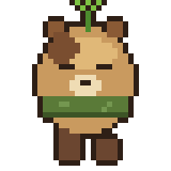
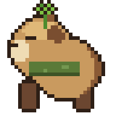
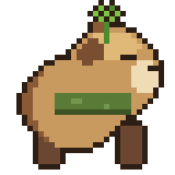
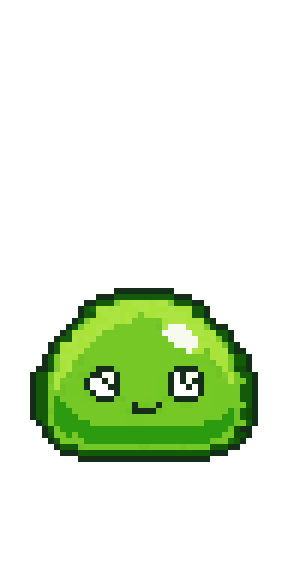
Drawn pixel-by-pixel from a build script — the capybara's 4-direction walk cycle came from a single reference photo, the slime's bounce with true GIF transparency.
For humanoids (2 arms, 2 legs) the skill targets the Liberated Pixel Cup grid — 64×64 cells, standard rows for walk/slash/thrust/spellcast/shoot/hurt — so a build script's output drops straight into any LPC-aware engine template. Only the layout convention is borrowed; every pixel below is drawn from scratch.
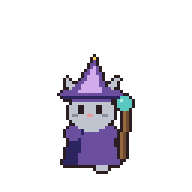
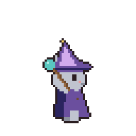
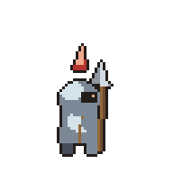
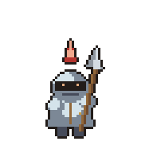
each character: idle + 8-frame walk and 6-frame slash, ×4 directions, on one
832×1344 sheet + engine JSON — built with scripts/lpc.py, poses authored once and
translated onto a margin canvas so a long weapon never clips mid-swing.
The skill can study a visual reference and turn observations into durable, imperative rules inside its own knowledge base. It learns proportions, silhouette, material ramps, overlap and animation constraints—not a pixel-for-pixel copy. The original Verdant Oracle below was built after studying layered-cloth tactical chibi design.
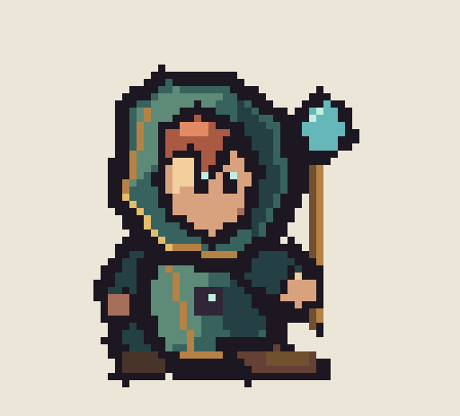
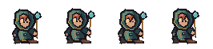
three-quarter tactical construction: oversized near hand/boot, smaller
far-side anatomy, layered cloth with selective warm trim, stable ground pivot, and explicit
validation that both eyes and both arms remain readable. Regenerate with
python3 examples/tactical-verdant-oracle.py.
The proportion system now includes a 48–64px tall tactical preset: roughly 4–5 heads high, with a narrower waist, longer segmented legs, readable knees, and slightly oversized hands and boots. It redraws anatomy at the new height instead of stretching a compact chibi sprite.
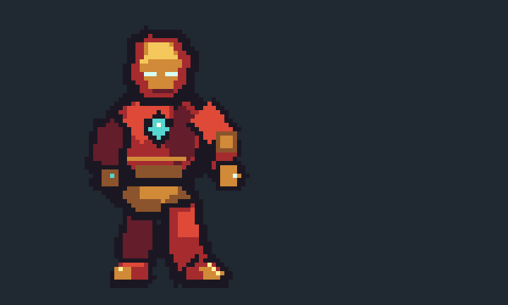
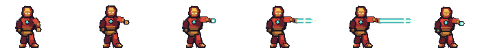
fan-art demonstration of filled segmented arm armor, matching red/gold
boots, explicit far-side anatomy, and a dynamic attack canvas sized from the full beam union.
Regenerate with python3 examples/tall-iron-man-repulsor.py.
A random cast drawn from scratch — every character is a ~20-line parametric Python function: 32×32, its own 3-step hue-shifted ramps, selective outline, and a 3-frame idle loop (float, bounce, hover, flicker, throat-puff, wing-buzz…). One build script regenerates all ten.
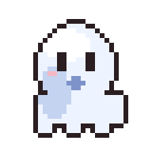
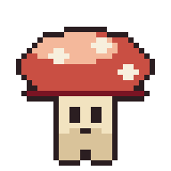
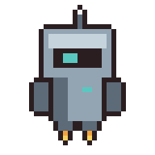
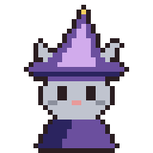
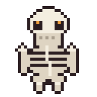
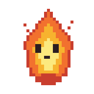
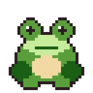
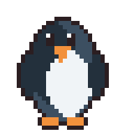
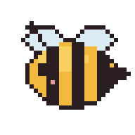
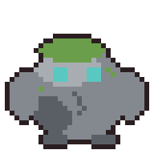
all ten live in one script — regenerate with python3 examples/anime-cast.py
Show Claude a character image and ask for a game-ready sprite: it studies the reference, draws a parametric 32×32 chibi from scratch (one draw function per view), and generates a contact-passing walk cycle for all four directions — 12 colors, one build script, zero diffusion.
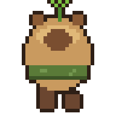
a capybara with a sprout & scarf, from a reference photo → 4 directions ×
4-frame walk, 140ms/frame · spritesheet + engine JSON included ·
regenerate with python3 examples/capybara-4dir.py
Point pixelpipe at any image model's output (or a screenshot). It recovers the
true pixel grid, strips baked-in backgrounds, hardens alpha, kills orphan noise, collapses the
color explosion, and locks everything onto one shared palette — then hands you
a build script to keep editing and animating. Every asset shares one color vocabulary, so a whole
cast looks like one game.
python3 scripts/pixelpipe.py generated.png \ --strip-checker --max-colors 24 --display 6 # or lock every asset to one game palette: python3 scripts/pixelpipe.py generated.png --palette my_game
…then animate it deterministically — the same sprite, every frame:
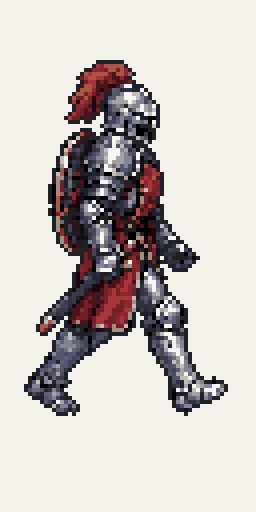
A codex-generated knight (174,172 colors) → pixelpipe dominant-block sampling (128px · 28 colors). The walk is a codex-generated 6-frame walk-cycle sheet cleaned in one pass, so every frame shares one palette. No re-rolling between frames — the build script is the animation.
Claude writes a Python build script that draws the art, renders a preview, looks at the image with its own vision, critiques it against a professional checklist (silhouette, light source, banding, orphan pixels, palette discipline…), edits the script and re-renders. Minimum 2–3 passes before shipping.
Frames × layers engine: pixel-perfect primitives, palette locking, hue-shifted ramps,
Bayer dithering, selective outlines, masked painting via only=.
Learns from reference art: recovers true resolution from sloppy upscales, strips baked-in checkerboards, extracts palettes, ramps and technique stats.
Proportions, silhouette-first workflow, shading & color theory, animation timing tables, retro palettes (Game Boy, PICO-8, C64…), engine export guides.
Study an image → Claude writes an imperative style card → those rules and palettes apply to every future artwork. The chibi cast follows one learned card studied from reference art.
1x PNG masters, animated GIFs with proper transparency, spritesheets with Aseprite-compatible JSON for Unity / Godot / Phaser.
The build script is the artwork — diffable, re-renderable, animation frames are function calls, not hand-copied pixels.
from pixelstudio import Sprite, ramp BODY = ramp("#38b764", 5) # hue-shifted 5-step ramp s = Sprite(32, 32, palette=BODY + ["#1a1c2c"]) s.ellipse(6, 12, 25, 27, BODY[0]) # darkest = silhouette s.ellipse(5, 11, 23, 26, BODY[2], only="opaque") # restack lighter, toward light s.outline(BODY[0], where="inside") # selective outline s.preview("preview.png", scale=10) # Claude LOOKS at this s.save_gif("out.gif", scale=6)
git clone https://github.com/Gamezxz/pixel-art-studio.git cp -r pixel-art-studio ~/.claude/skills/pixel-art-studio pip3 install pillow
Then ask Claude Code: "draw a 64×64 dragon boss" · "make a 4-frame slime idle animation" · "study this sprite and learn its style"